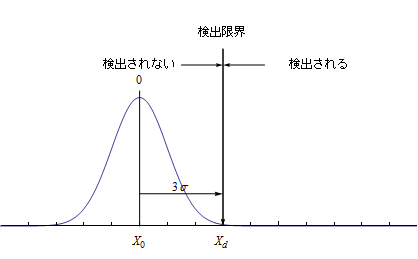
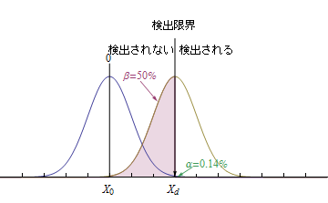
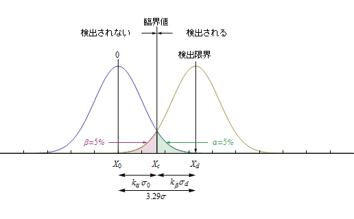

検出限界の考え方
検出限界(検出下限ともいう)は，有為な放射能を検出することのできる下限値である。有為な放射能とは，統計的に見て，バックグラウンド値と明らかに異なる放射能が検出されたと判断できるということである。主に用いられている検出限界の考え方には，Kaiserの考え方とCurrieの考え方の２つがある。Kaiserの考え方は従来主流の地位を占めてきたという経緯があり，我が国で多く見られる3σ法もこの考え方に近い。ただし，近年Currieの考え方に変化する動きも見られる。一方，欧米ではCurrieの考え方が主流になっている。欧米では2σが多く用いられるという説明を以前どこかで読んだことあるが，これは誤りであろう。ISO/IUPACの考え方はCurrieの考え方であって，検出限界のデフォルトは3.29σである。おそらくCurrieの信頼度95%(α=β)とバックグラウンド値の標準誤差の信頼度95%(α=2σ)を混同したものと思われる。これらの意味については後述する。
Kaiserの考え方とCurrieの考え方
Kaiserの考え方
Kaiserの考え方は，ブランク(バックグラウンド)の平均値\(X_b\)から，その標準誤差σ(以降標準誤差をσであらわす)のk倍を検出限界とする考え方である。つまり，検出限界\(X_d\)は次の式で定義される。
\[
X_d = X_b + k\sigma
\]
\(X_d\)が真の計数率の場合は、ブランク値は0になるので、
\[
X_d = X_{b\rightarrow 0} + k\sigma = k\sigma
\]
である。kの値としては3が用いられることが多く，この場合は，ブランク値から+3σ離れた値を検出限界とする。

検出限界を3σとした場合，放射能を誤って検出してしまう可能性は，±3σは信頼度99.72%なので，その片側0.14%(下図のαの範囲)である。
このように放射能が存在しないのに，誤って検出してしまう（擬陽性）ことを第一種の過誤と呼び，記号αで表す。過誤を犯す可能性を危険率あるいは有為水準と呼ぶ。
3σの危険率は0.14%である。ところが，ブランク信号と同様に測定値にもまた値の揺らぎがあるため，放射能が存在するのに検出されない可能性は50%になってしまう(下図のβの範囲)。
このように放射能が存在するのに，検出されなかったと判断してしまう(擬陰性)ことを第二種の過誤と呼び，記号βで表す。

Currieの考え方
Currieの考え方は，有為と見なす限界値(これを臨界値という)をα=βの危険率で定めるというものである。すなわち臨界値\(X_c\)と検出限界\(X_b\)は，ブランクが0のとき，
\begin{eqnarray}
X_c &=& k_{\overline{\alpha}}\sigma_b \\
X_d &=& k_{\overline{\alpha}}\sigma_0 + k_{\overline{\beta}}\sigma_d
\end{eqnarray}
通常，危険率5%(α=β=5%)が用いられること多い。検出限界での試料側の確率分布はバックグラウンドと同じと考えて差し支えないので，危険率5%とすると，臨界値はブランク値から1.645σ離れた値で，検出限界はバックグラウンド平均値から3.29σ離れた値となる。

3σ法とCurrie法
3σ法とCurrie法による検出限界の算出の例を次に示す。
3σ法
バックグラウンドと試料をそれぞれ計測した時のバックグラウンドを差し引いた真の計数率\(n_N\)とその標準誤差\(\sigma_N\)を求める式は以下の通りである。
\begin{eqnarray}
n_N &=& n_s - n_b \\
\sigma_s &=& \sqrt{\frac{n_N + n_b}{t_s}} \\
\sigma_b &=& \sqrt{\frac{n_b}{t_b}} \\
\sigma_N &=& \sqrt{\sigma_{s}^2 + \sigma_{b}^2}
\end{eqnarray}
ここで
| \(n_N\) | 真の計数率 |
| \(n_s\) | 試料の計数率 |
| \(n_b\) | バックグラウンド計数率 |
| \(t_s\) | 試料の測定時間 |
| \(t_b\) | バックグラウンドの測定時間 |
| \(\sigma_s\) | 試料の計数率の標準誤差 |
| \(\sigma_b\) | バックグラウンド計数率の標準誤差 |
| \(\sigma_N\) | 真の計数率の標準誤差 |
標準誤差\(\sigma_N\)のk倍以上で有為差を認めるとすると，検出限界の真の計数率\(n_{N\rightarrow d}\)は，
\[
n_d = k\sigma_N = k\sqrt{\sigma_{s}^2 + \sigma_{b}^2} = k\sqrt{\frac{n_d + n_s}{t_s} + \frac{n_b}{t_b}}
\]
これを\(n_d\)について解くと，
\[
{\rm ∴検出限界の真の計数率}n_d = \frac{k}{2}
\left[
\frac{k}{t_s} +
\sqrt{
\left(
\frac{k}{t_s}
\right)^2 +
4n_b
\left(
\frac{1}{t_s} + \frac{1}{t_b}
\right)}
\right]
\]
Currie法
バックグラウンドと試料をそれぞれ計測した時のバックグラウンドを差し引いた真の計数率\(n_N\)とその標準誤差\(\sigma_N\)を求める式は以下の通りである。
\begin{eqnarray}
n_N &=& n_s - n_b \\
\sigma_s &=& \sqrt{\frac{n_N + n_b}{t_s}} \\
\sigma_b &=& \sqrt{\frac{n_b}{t_b}} \\
\sigma_N &=&
\sqrt{\sigma_{s}^2 + \sigma_{b}^2} &=&
\sqrt{\frac{n_N + n_b}{t_s} + \frac{n_b}{t_b}} =
\sqrt{\frac{n_N}{t_s} + n_b\left(\frac{1}{t_b} + \frac{1}{t_s}\right)}
\end{eqnarray}
ここで
| \(n_N\) | 真の計数率 |
| \(n_s\) | 試料の計数率 |
| \(n_b\) | バックグラウンド計数率 |
| \(t_s\) | 試料の測定時間 |
| \(t_b\) | バックグラウンドの測定時間 |
| \(\sigma_s\) | 試料の計数率の標準誤差 |
| \(\sigma_b\) | バックグラウンド計数率の標準誤差 |
| \(\sigma_N\) | 真の計数率の標準誤差 |
標準誤差\(k_{\overline{\alpha}} = k_{\overline{\beta}} \equiv k_{\overline{\mu}}\)で有為差を認めるとすると，検出限界の真の計数率\(n_{N\rightarrow d}\)は，
\[
n_d =
k_\mu \sigma_{N\rightarrow 0} + k\mu \sigma_{N\rightarrow d} =
k\mu\sqrt{n_b\left(\frac{1}{t_s} + \frac{1}{t_b}\right)} + k\mu\sqrt{\frac{n_d}{t_s} + n_b\left(\frac{1}{t_s} + \frac{1}{t_b}\right)}
\]
これを\(n_d\)について解くと，
\[
{\rm ∴検出限界の真の計数効率}n_d = \frac{k_{\mu}^2}{t_s} + 2k_{\mu}\sqrt{n_b\left(\frac{1}{t_s} + \frac{1}{t_b}\right)}
\]
ガイガーカウンターの計数率表示から標準偏差を求める場合
デジタル式(移動平均方式)
計数率計が過去の移動平均から計数率を算出する方式の場合，、平衡状態での標準偏差σは、移動平均の算出時間tに依存する。平衡状態に達するまでには移動平均の算出時間と同じ時間を要する。
\[
\sigma = \frac{\sqrt{nt}}{t}
\]
例) 過去30秒間の移動平均からcpm値を算出するガイガーカウンターで計数率100[cpm]の時の標準偏差は
\[
\sigma = \frac{\sqrt{nt}}{t} = \frac{\sqrt{100 \times 0.5}}{0.5} 14.14[cpm]
\]
アナログ式(一次遅れ系)
アナログ式の場合、平衡状態での標準偏差σは積分回路のインピーダンスRC(=時定数τ)に依存する。平衡状態に達するまでには、時定数の数倍の時間を要する。
\[
\sigma = \frac{n}{\sqrt{2n\tau}}
\]
例) 計数率計の時定数が30秒で計数率100[cpm]の時の標準偏差は
\[
\sigma = \frac{n}{\sqrt{2n\tau}} = \frac{100}{\sqrt{2 \times 100 \times 0.5}} = 10[cpm]
\]
多重計測
x回の独立した計測を行った場合，標準誤差\(\sigma_E\)は，上記の式より，
\begin{eqnarray}
\sigma_E &=&
\frac{\sqrt{ntx}}{tx} =
\frac{\sqrt{nt}}{t} \times \frac{\sqrt{x}}{x} =
\frac{\sqrt{nt}}{t} \times \frac{1}{\sqrt{x}} \cdots {\rm 移動平均法式} \\
\sigma_E &=&
\frac{n}{\sqrt{2n\tau x}} =
\frac{n}{\sqrt{2n\tau}} \times \frac{1}{\sqrt{x}} \cdots {\rm 一次遅れ系}
\end{eqnarray}
すなわち，誤差を2分の1にするには。計測回数を4倍にする必要がある。